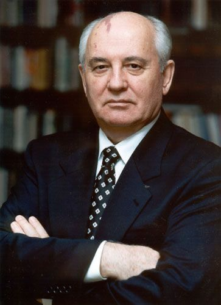

SumberMIKHAIL GORBACHEV adalah pemimpin terakhir Uni Soviet yang terkenal karena kebijakan reformasi besar yang disebut Perestroika (restrukturisasi) dan Glasnost (keterbukaan), yang mengarah pada akhir dari Perang Dingin dan pembubaran Uni Soviet pada 1991. Gorbachev memainkan peran kunci dalam mengubah jalannya sejarah dunia dan memperkenalkan perubahan radikal dalam politik dan ekonomi Uni Soviet.
Nama Lengkap: Mikhail Sergeyevich Gorbachev Lahir: 2 Maret 1931, Privolnoye, Rusia (saat itu bagian dari Uni Soviet) Meninggal: 30 Agustus 2022, Moskwa, Rusia Jabatan: Sekretaris Jenderal Partai Komunis Uni Soviet (1985–1991) Presiden Uni Soviet (1990–1991) Penghargaan: Hadiah Nobel Perdamaian (1990) Pengaruh: Pemimpin revolusioner yang mengakhiri Perang Dingin dan membubarkan Uni Soviet, serta memperkenalkan kebijakan-kebijakan yang mengarah pada lebih banyak kebebasan di Uni Soviet.
Gorbachev berasal dari keluarga petani di Privolnoye, dekat Stavropol, Rusia. Ia belajar hukum di Universitas Negeri Moskwa dan bergabung dengan Partai Komunis Uni Soviet pada usia muda. Pada 1950-an dan 1960-an, ia cepat naik pangkat dalam Partai Komunis, berfokus pada pertanian dan ekonomi, sebelum akhirnya menduduki posisi penting di pemerintahan. Ia dikenal sebagai pemimpin yang lebih modern dan berpendidikan dibandingkan dengan para pemimpin Uni Soviet sebelumnya, yang memberi tanda-tanda perubahan besar dalam kepemimpinannya.
1. Perestroika (Restrukturisasi): Pada pertengahan 1980-an, Uni Soviet mengalami stagnasi ekonomi yang parah. Gorbachev meluncurkan kebijakan Perestroika, yang bertujuan untuk mendemokratisasi ekonomi, dengan memperkenalkan elemen-elemen pasar dalam sistem komunis yang sangat terkendali. Privatisasi sebagian, decentralisasi, dan liberalisasi ekonomi dimulai di bawah Perestroika, meskipun hasilnya tidak selalu memadai untuk mengatasi masalah ekonomi yang mendalam. 2. Glasnost (Keterbukaan): Gorbachev juga memperkenalkan kebijakan Glasnost, yang memungkinkan lebih banyak kebebasan berbicara dan transparansi dalam pemerintahan. Ini termasuk memperbolehkan media untuk lebih kritis terhadap pemerintah dan memungkinkan masyarakat untuk lebih terbuka dalam mendiskusikan isu-isu sosial dan politik. Glasnost juga menciptakan ruang bagi oposisi politik yang lebih besar, yang sebelumnya dilarang di Uni Soviet. Hal ini mengarah pada peningkatan kebebasan sipil, namun juga menambah ketegangan politik yang pada akhirnya berkontribusi pada keruntuhan sistem komunis. 3. Kebijakan Luar Negeri dan Pengakhiran Perang Dingin: Di bidang luar negeri, Gorbachev mengadopsi pendekatan yang lebih kooperatif terhadap Amerika Serikat dan negara-negara Barat. Salah satu pencapaian terbesar Gorbachev adalah berakhirnya Perang Dingin. Pada 1987, ia menandatangani Perjanjian INF dengan Presiden AS Ronald Reagan, yang mengarah pada pengurangan besar senjata nuklir. Gorbachev juga mengurangi keterlibatan Uni Soviet di negara-negara satelitnya di Eropa Timur. Tembok Berlin runtuh pada 1989, dan negara-negara seperti Polandia, Cekoslowakia, dan Hongaria mulai mengalami peralihan ke demokrasi tanpa campur tangan militer dari Uni Soviet.
Pada tahun 1991, setelah serangkaian krisis politik dan ekonomi yang semakin memburuk, dan setelah serangan dari faksi konservatif di dalam militer dan pemerintahan, Uni Soviet akhirnya dibubarkan pada Desember 1991. Gorbachev mengundurkan diri sebagai Presiden Uni Soviet pada 25 Desember 1991, menyusul deklarasi pembubaran negara oleh Duma Negara dan pengakuan negara-negara yang sebelumnya menjadi bagian dari Uni Soviet sebagai negara merdeka. Setelah pembubaran Uni Soviet, Gorbachev menjadi figur politik simbolis, meskipun ia tidak memiliki banyak kekuasaan di Rusia yang baru.
: ✅ Dampak Positif: Akhir Perang Dingin: Gorbachev memainkan peran utama dalam mengakhiri Perang Dingin antara Uni Soviet dan Amerika Serikat, yang mengurangi ketegangan global dan mengurangi ancaman perang nuklir. Reformasi Sosial dan Ekonomi: Meskipun Perestroika dan Glasnost menghadapi banyak kesulitan, mereka membuka jalan bagi perubahan besar dalam kebebasan politik dan lebih banyak ruang bagi pengkritik pemerintah. Hadiah Nobel Perdamaian: Gorbachev menerima Hadiah Nobel Perdamaian pada 1990 untuk perannya dalam mengurangi ketegangan internasional dan meningkatkan hubungan antar negara besar. ❌ Dampak Negatif: Krisis Ekonomi: Perestroika gagal memberikan solusi nyata untuk masalah ekonomi Uni Soviet. Bahkan, reformasi ini memperburuk banyak masalah yang ada dan memperburuk kemiskinan dan kesulitan sosial di beberapa daerah. Keruntuhan Uni Soviet: Meskipun Gorbachev berusaha memperbarui Uni Soviet, banyak pihak yang merasa bahwa pembubaran Uni Soviet adalah kegagalan besar, yang menyebabkan terjadinya krisis politik dan ekonomi di negara-negara bekas Uni Soviet dan keruntuhan sistem komunis. Kritik Domestik: Banyak orang di Rusia mengkritik Gorbachev karena kegagalan mempertahankan integritas Uni Soviet dan stabilitas ekonomi, sementara beberapa orang Barat menganggapnya sebagai simbol reformasi yang tidak berhasil.